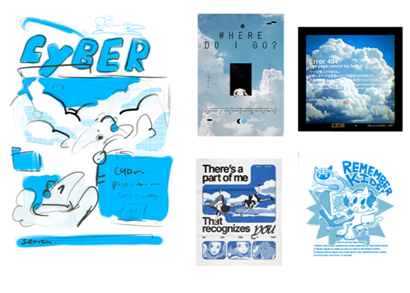
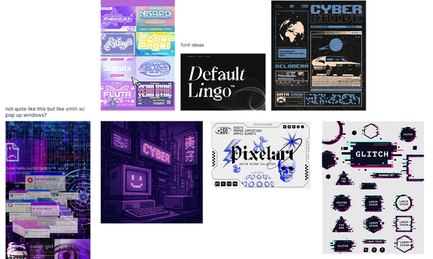
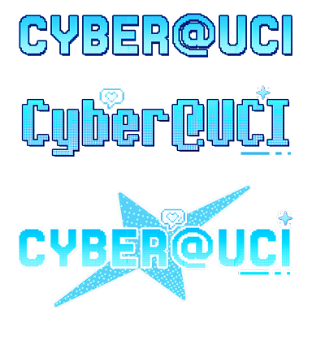
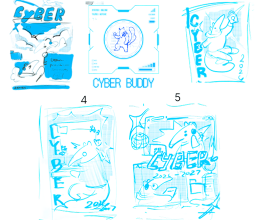

Ideation
Each merch design begins with a process of sketching and ideation, where we explore different concepts, visual styles, and creative directions. Through rough sketches and inspiration boards, we experiment with colors, typography, and graphic elements before refining our ideas into cohesive designs.


Draft Iteration
During the draft iteration phase, we explored different logo styles, typography, and graphic concepts for CYBEROUCI merchandise. Through multiple sketches and design variations, we experimented with incorporating our branding into different visuals, refining each concept to better reflect our identity and establish a cohesive look across our merchandise.


Final Look!
Our final merchandise collection brings CYBER@UCI’s visual identity to life through a cohesive range of T-shirts and hoodies. Combining bold typography, vibrant blue graphics, and playful illustrations, each piece reflects our community’s creativity and passion for technology. These final designs are ready to represent CYBER@UCI both on and off campus!